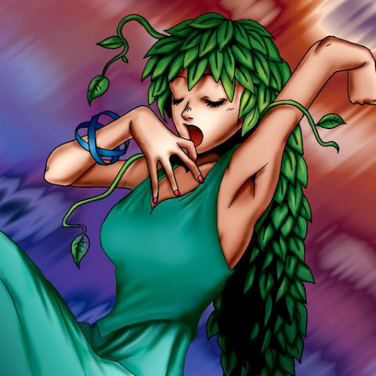

Goddess of Whim

Description: "Own ATK/DEF either increased or decreased by up to 1500 points when entering battle."
STATS
ATK: 950
DEF: 700DECK COST
Deck Cost per Card: 22EFFECT NOT IMPLEMENTED
Fusion List (12 Possible Fusions)
- Goddess of Whim + Ancient Tree of Enlightenment = Queen of Autumn Leaves
- Goddess of Whim + Dancing Elf = Dark Witch
- Goddess of Whim + Dark Plant = Queen of Autumn Leaves
- Goddess of Whim + Magician of Faith = Dark Witch
- Goddess of Whim + Hourglass of Courage = Dark Witch
- Goddess of Whim + Injection Fairy Lily = Dark Witch
- Goddess of Whim + Goddess of Whim = Dark Witch
- Goddess of Whim + Muka Muka = Mystical Sand
- Goddess of Whim + Succubus Knight = Dark Witch
- Goddess of Whim + The Thing That Hides in the Mud = Mystical Sand
- Goddess of Whim + The Unhappy Maiden = Dark Witch
- Goddess of Whim + Wing Egg Elf = Dark Witch